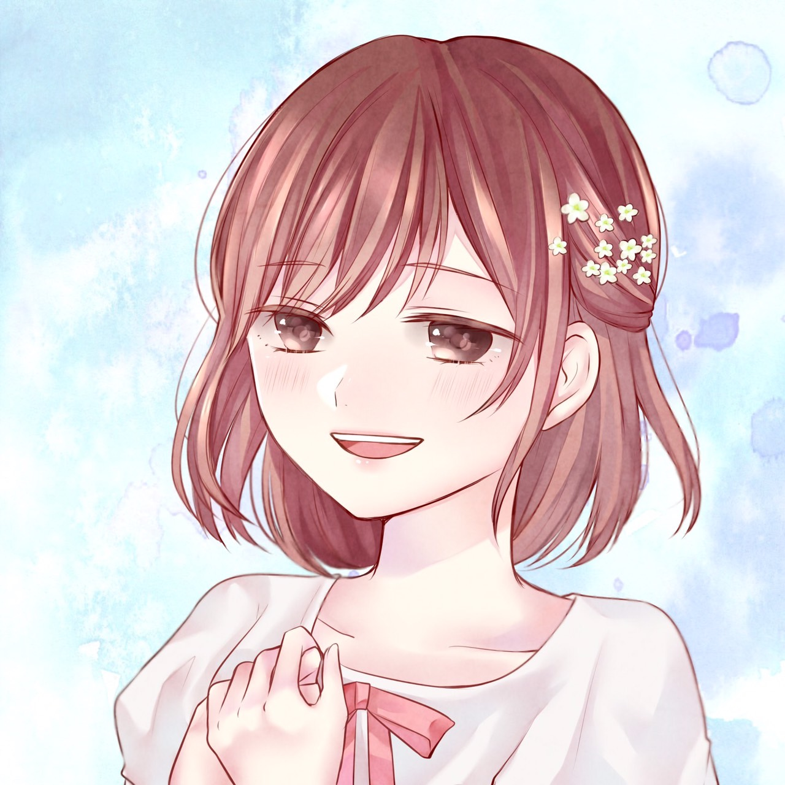

~好きなアーティストや曲について~
Q 好きなアーティストや曲はありますか？
A 高校生の時にAcid Black Cherry様の「20+∞Century Boys」という曲に出会い、以来ずーっと挫けそうになる度に聴いて気合いを入れ直しています。人生のテーマソングですね!
Q 他にもありますか？
A 学生時代に1番憧れていたのがシンガーソングライターの奥華子様でした。歌詞もメロディもシンプルなものが多くて、声もとても透き通っていて心にまっすぐ入ってくる感じが素敵で、こんな作品を作りたいっ!!と思っていました。
A 1番好きな曲は「笑って笑って」です！
~歌い手活動に関するお話~
Q 活動で悩んだことはありましたか？
A 正直活動を始めてしばらくするまでずっと自分の声が嫌いでした。「可愛くもかっこよくもなくてカスカスしていて変な声」と思っていたんです。笑
Q 他の歌い手さんを見て思ったこととかもありましたか？
A たくさんの歌い手さんがいらっしゃいますが、皆さんかっこよかったり可愛かったり透き通っていたりパワフルだったり素敵なお声をされているなぁと羨ましいばかりでした
Q そこからどのように自信をつけられましたか？
A でも段々と聴いてくださる方が増えてきてカスカスと思っていた部分を「ハスキー」と言っていただいたり「大人っぽさと子供っぽさが混ざった思春期ボイス」等と言っていただくうちに自信が少しずつついてきました。
Q まとめとして、視聴者の方にメッセージをお願いします。
A なかなか他では聴かない声だとは思うのでぜひたくさん聴いていただいて虜になってください。笑
~歌い手を始めた理由について~
Q 歌い手を始めた理由について教えてください！
A 昔から歌うことがとても好きでした。でも、前記でもお話した通り自分の声が嫌いでした。
そんな中「歌ってみた」というものに出会い、同じ曲でも歌い手によって表情が変わったり、その曲の持つ魅力がもっと輝いたりすることにとても魅力を感じ、「わちもやってみたいっ!!」となりました!
~メッセージについて~
Q では、応援してくださる方にメッセージをお願いします！
A 長くなるので5つに分けて話したいと思います！
いつも優しい言葉をくださったり色んな面で応援してくださり、支えてくださる皆さん、本当にありがとうございます!
皆さんのおかげで毎日とても活き活きしていて喜怒哀楽も騒がしく、人間らしく過ごせています。また、活動を始めた頃は想像もつかなかった景色を少しずつ見せていただいています。
どこまで実現できるか分かりませんが、わちの最終目標は「色んなジャンルの活動者様が輝ける場所を作ること」です。とても大きいことを言っている自覚はあります。1人でできることではないことも充分承知しております。なので色んな方と繋がりを増やして一緒にこの界隈を盛り上げていきたいと考えています。
その過程の中でもしかしたら皆さんにとって想像もつかなかったようなことを起こすかもしれません。
最後に、わちはずっと「あなた」のために歌い続けます。いつでも「あなた」に寄り添い続けます。これだけは絶対に変わりません。なのでぜひこれからもわちの成長を見守っていただきたいです！